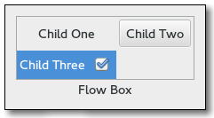

Gtk.FlowBox
Example
Methods
| Inherited: | Gtk.Container (27), Gtk.Widget (256), GObject.Object (33), Gtk.Buildable (10), Gtk.Orientable (2) |
|---|
| static | new() |
| get_activate_on_single_click() | |
| get_child_at_index(idx) | |
| get_column_spacing() | |
| get_homogeneous() | |
| get_max_children_per_line() | |
| get_min_children_per_line() | |
| get_row_spacing() | |
| get_selected_children() | |
| get_selection_mode() | |
| insert(widget, position) | |
| invalidate_filter() | |
| invalidate_sort() | |
| select_all() | |
| select_child(child) | |
| selected_foreach(func, *data) | |
| set_activate_on_single_click(single) | |
| set_column_spacing(spacing) | |
| set_filter_func(filter_func, *user_data) | |
| set_hadjustment(adjustment) | |
| set_homogeneous(homogeneous) | |
| set_max_children_per_line(n_children) | |
| set_min_children_per_line(n_children) | |
| set_row_spacing(spacing) | |
| set_selection_mode(mode) | |
| set_sort_func(sort_func, *user_data) | |
| set_vadjustment(adjustment) | |
| unselect_all() | |
| unselect_child(child) |
Virtual Methods
| Inherited: | Gtk.Container (10), Gtk.Widget (82), GObject.Object (7), Gtk.Buildable (10) |
|---|
| do_activate_cursor_child() | |
| do_child_activated(child) | |
| do_move_cursor(step, count) | |
| do_select_all() | |
| do_selected_children_changed() | |
| do_toggle_cursor_child() | |
| do_unselect_all() |
Properties
| Inherited: | Gtk.Container (3), Gtk.Widget (38), Gtk.Orientable (1) |
|---|
| Name | Type | Flags | Short Description |
|---|---|---|---|
| activate-on-single-click | bool | r/w | Activate row on a single click |
| column-spacing | int | r/w | The amount of horizontal space between two children |
| homogeneous | bool | r/w | Whether the children should all be the same size |
| max-children-per-line | int | r/w | The maximum amount of children to request space for consecutively in the given orientation. |
| min-children-per-line | int | r/w | The minimum number of children to allocate consecutively in the given orientation. |
| row-spacing | int | r/w | The amount of vertical space between two children |
| selection-mode | Gtk.SelectionMode | r/w | The selection mode |
Style Properties
| Inherited: | Gtk.Widget (17) |
|---|
Signals
| Inherited: | Gtk.Container (4), Gtk.Widget (69), GObject.Object (1) |
|---|
| Name | Short Description |
|---|---|
| activate-cursor-child | The ::activate-cursor-child signal is a [keybinding signal][GtkBindingSignal] which gets emitted when the user activates the box. |
| child-activated | The ::child-activated signal is emitted when a child has been activated by the user. |
| move-cursor | The ::move-cursor signal is a [keybinding signal][GtkBindingSignal] which gets emitted when the user initiates a cursor movement. |
| select-all | The ::select-all signal is a [keybinding signal][GtkBindingSignal] which gets emitted to select all children of the box, if the selection mode permits it. |
| selected-children-changed | The ::selected-children-changed signal is emitted when the set of selected children changes. |
| toggle-cursor-child | The ::toggle-cursor-child signal is a [keybinding signal][GtkBindingSignal] which toggles the selection of the child that has the focus. |
| unselect-all | The ::unselect-all signal is a [keybinding signal][GtkBindingSignal] which gets emitted to unselect all children of the box, if the selection mode permits it. |
Fields
| Inherited: | Gtk.Container (1), Gtk.Widget (1), GObject.InitiallyUnowned (3), GObject.Object (3) |
|---|
| Name | Type | Access | Description |
|---|---|---|---|
| container | Gtk.Container | r |
Class Details
- class Gtk.FlowBox(**kwargs)
Bases: Gtk.Container, Gtk.Orientable
A Gtk.FlowBox positions child widgets in sequence according to its orientation.
For instance, with the horizontal orientation, the widgets will be arranged from left to right, starting a new row under the previous row when necessary. Reducing the width in this case will require more rows, so a larger height will be requested.
Likewise, with the vertical orientation, the widgets will be arranged from top to bottom, starting a new column to the right when necessary. Reducing the height will require more columns, so a larger width will be requested.
The children of a Gtk.FlowBox can be dynamically sorted and filtered.
Although a Gtk.FlowBox must have only Gtk.FlowBoxChild children, you can add any kind of widget to it via Gtk.Container.add (), and a Gtk.FlowBoxChild widget will automatically be inserted between the box and the widget.
Also see Gtk.ListBox.
Gtk.FlowBox was added in GTK+ 3.12.
- static new()
Returns: a new Gtk.FlowBox container Return type: Gtk.Widget Creates a Gtk.FlowBox.
New in version 3.12.
- get_activate_on_single_click()
Returns: True if children are activated on single click, False otherwise Return type: bool Returns whether children activate on single clicks.
New in version 3.12.
- get_child_at_index(idx)
Parameters: idx (int) – the position of the child Returns: the child widget, which will always be a Gtk.FlowBoxChild Return type: Gtk.FlowBoxChild Gets the nth child in the box.
New in version 3.12.
- get_column_spacing()
Returns: the horizontal spacing Return type: int Gets the horizontal spacing.
New in version 3.12.
- get_homogeneous()
Returns: True if the box is homogeneous. Return type: bool Returns whether the box is homogeneous (all children are the same size). See Gtk.Box.set_homogeneous ().
New in version 3.12.
- get_max_children_per_line()
Returns: the maximum number of children per line Return type: int Gets the maximum number of children per line.
New in version 3.12.
- get_min_children_per_line()
Returns: the minimum number of children per line Return type: int Gets the minimum number of children per line.
New in version 3.12.
- get_row_spacing()
Returns: the vertical spacing Return type: int Gets the vertical spacing.
New in version 3.12.
- get_selected_children()
Returns: A GLib.List containing the Gtk.Widget for each selected child. Free with GLib.List.free () when done. Return type: [Gtk.FlowBoxChild] Creates a list of all selected children.
New in version 3.12.
- get_selection_mode()
Returns: the Gtk.SelectionMode Return type: Gtk.SelectionMode Gets the selection mode of box.
New in version 3.12.
- insert(widget, position)
Parameters: - widget (Gtk.Widget) – the Gtk.Widget to add
- position (int) – the position to insert child in
Inserts the widget into box at position.
If a sort function is set, the widget will actually be inserted at the calculated position and this function has the same effect as Gtk.Container.add ().
If position is -1, or larger than the total number of children in the box, then the widget will be appended to the end.
New in version 3.12.
- invalidate_filter()
Updates the filtering for all children.
Call this function when the result of the filter function on the box is changed due ot an external factor. For instance, this would be used if the filter function just looked for a specific search term, and the entry with the string has changed.
New in version 3.12.
- invalidate_sort()
Updates the sorting for all children.
Call this when the result of the sort function on box is changed due to an external factor.
New in version 3.12.
- select_all()
Select all children of box, if the selection mode allows it.
New in version 3.12.
- select_child(child)
Parameters: child (Gtk.FlowBoxChild) – a child of box Selects a single child of box, if the selection mode allows it.
New in version 3.12.
- selected_foreach(func, *data)
Parameters: - func (Gtk.FlowBoxForeachFunc) – the function to call for each selected child
- data (object) – user data to pass to the function
Calls a function for each selected child.
Note that the selection cannot be modified from within this function.
New in version 3.12.
- set_activate_on_single_click(single)
Parameters: single (bool) – True to emit child-activated on a single click If single is True, children will be activated when you click on them, otherwise you need to double-click.
New in version 3.12.
- set_column_spacing(spacing)
Parameters: spacing (int) – the spacing to use Sets the horizontal space to add between children. See the Gtk.FlowBox :column-spacing property.
New in version 3.12.
- set_filter_func(filter_func, *user_data)
Parameters: - filter_func (Gtk.FlowBoxFilterFunc or None) – callback that lets you filter which children to show
- user_data (object) – user data passed to filter_func
By setting a filter function on the box one can decide dynamically which of the children to show. For instance, to implement a search function that only shows the children matching the search terms.
The filter_func will be called for each child after the call, and it will continue to be called each time a child changes (via Gtk.FlowBoxChild.changed ()) or when Gtk.FlowBox.invalidate_filter () is called.
New in version 3.12.
- set_hadjustment(adjustment)
Parameters: adjustment (Gtk.Adjustment) – an adjustment which should be adjusted when the focus is moved among the descendents of container Hooks up an adjustment to focus handling in box. The adjustment is also used for autoscrolling during rubberband selection. See Gtk.ScrolledWindow.get_hadjustment () for a typical way of obtaining the adjustment, and Gtk.FlowBox.set_vadjustment ()for setting the vertical adjustment.
The adjustments have to be in pixel units and in the same coordinate system as the allocation for immediate children of the box.
New in version 3.12.
- set_homogeneous(homogeneous)
Parameters: homogeneous (bool) – True to create equal allotments, False for variable allotments Sets the Gtk.FlowBox :homogeneous property of box, controlling whether or not all children of box are given equal space in the box.
New in version 3.12.
- set_max_children_per_line(n_children)
Parameters: n_children (int) – the maximum number of children per line Sets the maximum number of children to request and allocate space for in box ’s orientation.
Setting the maximum number of children per line limits the overall natural size request to be no more than n_children children long in the given orientation.
New in version 3.12.
- set_min_children_per_line(n_children)
Parameters: n_children (int) – the minimum number of children per line Sets the minimum number of children to line up in box ’s orientation before flowing.
New in version 3.12.
- set_row_spacing(spacing)
Parameters: spacing (int) – the spacing to use Sets the vertical space to add between children. See the Gtk.FlowBox :row-spacing property.
New in version 3.12.
- set_selection_mode(mode)
Parameters: mode (Gtk.SelectionMode) – the new selection mode Sets how selection works in box. See Gtk.SelectionMode for details.
New in version 3.12.
- set_sort_func(sort_func, *user_data)
Parameters: - sort_func (Gtk.FlowBoxSortFunc or None) – the sort function
- user_data (object) – user data passed to sort_func
By setting a sort function on the box, one can dynamically reorder the children of the box, based on the contents of the children.
The sort_func will be called for each child after the call, and will continue to be called each time a child changes (via Gtk.FlowBoxChild.changed ()) and when Gtk.FlowBox.invalidate_sort () is called.
New in version 3.12.
- set_vadjustment(adjustment)
Parameters: adjustment (Gtk.Adjustment) – an adjustment which should be adjusted when the focus is moved among the descendents of container Hooks up an adjustment to focus handling in box. The adjustment is also used for autoscrolling during rubberband selection. See Gtk.ScrolledWindow.get_vadjustment () for a typical way of obtaining the adjustment, and Gtk.FlowBox.set_hadjustment ()for setting the horizontal adjustment.
The adjustments have to be in pixel units and in the same coordinate system as the allocation for immediate children of the box.
New in version 3.12.
- unselect_all()
Unselect all children of box, if the selection mode allows it.
New in version 3.12.
- unselect_child(child)
Parameters: child (Gtk.FlowBoxChild) – a child of box Unselects a single child of box, if the selection mode allows it.
New in version 3.12.
- do_activate_cursor_child()
Type: virtual
- do_child_activated(child)
Type: virtual Parameters: child (Gtk.FlowBoxChild) –
- do_move_cursor(step, count)
Type: virtual
Parameters: - step (Gtk.MovementStep) –
- count (int) –
- do_select_all()
Type: virtual Select all children of box, if the selection mode allows it.
New in version 3.12.
- do_selected_children_changed()
Type: virtual
- do_toggle_cursor_child()
Type: virtual
- do_unselect_all()
Type: virtual Unselect all children of box, if the selection mode allows it.
New in version 3.12.
Signal Details
- Gtk.FlowBox.signals.activate_cursor_child(flow_box)
Signal Name: activate-cursor-child Flags: ACTION, RUN_LAST Parameters: flow_box (Gtk.FlowBox) – The object which received the signal The ::activate-cursor-child signal is a [keybinding signal][GtkBindingSignal] which gets emitted when the user activates the box.
- Gtk.FlowBox.signals.child_activated(flow_box, child)
Signal Name: child-activated
Flags: Parameters: - flow_box (Gtk.FlowBox) – The object which received the signal
- child (Gtk.FlowBoxChild) – the child that is activated
The ::child-activated signal is emitted when a child has been activated by the user.
- Gtk.FlowBox.signals.move_cursor(flow_box, step, count)
Signal Name: move-cursor
Flags: Parameters: - flow_box (Gtk.FlowBox) – The object which received the signal
- step (Gtk.MovementStep) – the granularity fo the move, as a Gtk.MovementStep
- count (int) – the number of step units to move
The ::move-cursor signal is a [keybinding signal][GtkBindingSignal] which gets emitted when the user initiates a cursor movement. If the cursor is not visible in text_view, this signal causes the viewport to be moved instead.
Applications should not connect to it, but may emit it with GObject.signal_emit_by_name () if they need to control the cursor programmatically.
The default bindings for this signal come in two variants, the variant with the Shift modifier extends the selection, the variant without the Shift modifer does not. There are too many key combinations to list them all here. - Arrow keys move by individual children - Home/End keys move to the ends of the box - PageUp/PageDown keys move vertically by pages
- Gtk.FlowBox.signals.select_all(flow_box)
Signal Name: select-all Flags: ACTION, RUN_LAST Parameters: flow_box (Gtk.FlowBox) – The object which received the signal The ::select-all signal is a [keybinding signal][GtkBindingSignal] which gets emitted to select all children of the box, if the selection mode permits it.
The default bindings for this signal is Ctrl-a.
- Gtk.FlowBox.signals.selected_children_changed(flow_box)
Signal Name: selected-children-changed Flags: RUN_FIRST Parameters: flow_box (Gtk.FlowBox) – The object which received the signal The ::selected-children-changed signal is emitted when the set of selected children changes.
Use Gtk.FlowBox.selected_foreach () or Gtk.FlowBox.get_selected_children () to obtain the selected children.
- Gtk.FlowBox.signals.toggle_cursor_child(flow_box)
Signal Name: toggle-cursor-child Flags: ACTION, RUN_LAST Parameters: flow_box (Gtk.FlowBox) – The object which received the signal The ::toggle-cursor-child signal is a [keybinding signal][GtkBindingSignal] which toggles the selection of the child that has the focus.
The default binding for this signal is Ctrl-Space.
- Gtk.FlowBox.signals.unselect_all(flow_box)
Signal Name: unselect-all Flags: ACTION, RUN_LAST Parameters: flow_box (Gtk.FlowBox) – The object which received the signal The ::unselect-all signal is a [keybinding signal][GtkBindingSignal] which gets emitted to unselect all children of the box, if the selection mode permits it.
The default bindings for this signal is Ctrl-Shift-a.
Property Details
- Gtk.FlowBox.props.activate_on_single_click
Name: activate-on-single-click Type: bool Default Value: True Flags: r/w Determines whether children can be activated with a single click, or require a double-click.
- Gtk.FlowBox.props.column_spacing
Name: column-spacing Type: int Default Value: 0 Flags: r/w The amount of horizontal space between two children.
- Gtk.FlowBox.props.homogeneous
Name: homogeneous Type: bool Default Value: False Flags: r/w Determines whether all children should be allocated the same size.
- Gtk.FlowBox.props.max_children_per_line
Name: max-children-per-line Type: int Default Value: 7 Flags: r/w The maximum amount of children to request space for consecutively in the given orientation.
- Gtk.FlowBox.props.min_children_per_line
Name: min-children-per-line Type: int Default Value: 0 Flags: r/w The minimum number of children to allocate consecutively in the given orientation.
Setting the minimum children per line ensures that a reasonably small height will be requested for the overall minimum width of the box.
- Gtk.FlowBox.props.row_spacing
Name: row-spacing Type: int Default Value: 0 Flags: r/w The amount of vertical space between two children.
- Gtk.FlowBox.props.selection_mode
Name: selection-mode Type: Gtk.SelectionMode Default Value: Gtk.SelectionMode.SINGLE Flags: r/w The selection mode used by the flow box.